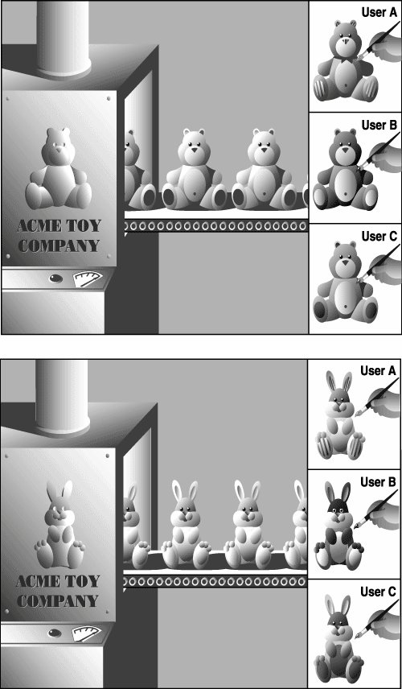

13.1. IntroductionBefore we get into the nitty-gritty of OOP and classes, we begin with a high-level overview, then present some simple examples to get you warmed up. If you are new to object-oriented programming, you may wish to skim this section first, then begin the formal reading in Section 13.2. If you are already familiar with object-oriented programming and want to see how it is done in Python, finish this section and go straight to Section 13.3 for more details. The main two entities in Python object-oriented programming are classes and class instances (see Figure 13-1). Figure 13-1. The factory manufacturing machines on the left are analogous to classes, while the toys produced are instances of their respective classes. Although each instance has the basic underlying structure, individual attributes like color or feet can be changedthese are similar to instance attributes. Classes and InstancesClasses and instances are related to each other: classes provide the definition of an object, and instances are "the real McCoy," the objects specified in the class definition brought to life. Here is an example of how to create a class: class MyNewObjectType(bases): 'define MyNewObjectType class' class_suite The keyword is class, followed by the class name. What follows is the suite of code that defines the class. This usually consists of various definitions and declarations. The biggest difference between declaring new-style classes and classic classes is that all new-style classes must inherit from at least one parent class. The bases argument is one (single inheritance) or more (multiple inheritance) parent classes to derive from. The "mother of all classes" is object. If you do not have any ancestor classes to inherit from, use object as your default. It must exist at the top of every class hierarchy. If you do not subclass object or a class that subclasses object, then you have defined a classic class: class MyNewObjectType: 'define MyNewObjectType classic class' class_suite Conversely, if you do not specify a parent class, or if you subclass a base class without a parent class, you have created a classic class. Most Python classes are still classic classes. There really is no problem with using them until they become obsolete in some future version of Python. We do recommend that you use new-style classes whenever possible, but for learning purposes, either type will suffice. The process of creating an instance is called instantiation, and it is carried out like this (note the conspicuous absence of a new keyword): myFirstObject = MyNewObjectType() The class name is given as an "invocation," using the familiar function operators ( ( ) ). You then typically assign that newly created instance to a variable. The assignment is not required syntactically, but if you do not save your instance to a variable, it will be of no use and will be automatically garbage-collected because there would no references to that instance. What you would be doing is allocating memory, then immediately deallocating it. Classes can be as simple or as complicated as you wish them to be. At a very minimum, classes can be used as namespaces (see Chapter 11 for more on these). By this, we mean that you can store data into variables and group them in such a way that they all share the same relationshipa named relationship using the standard Python dotted-attribute notation. For example, you may have a class without any inherent attributes and merely use such a class to provide a namespace for data, giving your class characteristics similar to records in Pascal or structures in C, or, in other words, use the class simply as a container object with shared naming. Here is an example: class MyData(object): pass Recall that the pass statement is used where code is required syntactically, but no operation is desired. In this case, the required code is the class suite, but we do not wish to provide one. The class we just defined has no methods or any other attributes. We will now create an instance to use the class simply as a namespace container. >>> mathObj = MyData()
>>> mathObj.x = 4
>>> mathObj.y = 5
>>> mathObj.x + mathObj.y
9
>>> mathObj.x * mathObj.y
20We could have used variables "x" and "y" to accomplish the same thing, but in our case, mathObj.x and mathObj.y are related by the instance name, mathObj. This is what we mean by using classes as namespace containers. mathObj.x and mathObj.y are known as instance attributes because they are only attributes of their instance object (mathObj), not of the class (MyData). As we will see later on in this chapter, these attributes really are dynamic in nature: you do not need to pre-declare or pre-assign them in the constructor or anywhere else. MethodsOne way we can improve our use of classes is to add functions to them. These class functions are known by their more common name, methods. In Python, methods are defined as part of the class definition, but can be invoked only on an instance. In other words, the path one must take to finally be able to call a method goes like this: (1) define the class (and the methods), (2) create an instance, and finally, (3) invoke the method on that instance. Here is an example class with a method: class MyDataWithMethod(object): # define the class def printFoo(self): # define the method print 'You invoked printFoo()!' You will notice the self argument, which must be present in all method declarations. That argument, representing the instance object, is passed to the method implicitly by the interpreter when you invoke a method on an instance, so you, yourself, do not have to worry about passing anything in (specifically self, which is automatically passed in for you). For example, if you have a method that takes two arguments, all of your calls should only pass in the second argument. Python passes in self for you as the first. If you make a mistake, do not worry about it. When an error occurs, Python will tell you that you have passed in the wrong number of arguments. You may make this mistake only once anyway... you'll certainly remember each time after that! The requirement of the instance (self) in each method's signature will be something new to those of you coming from C++ or Java, so be aware of that. It is all part of Python's philosophy of being explicitly clear. In those other languages, self is called "this." You can find out more about self in the Core Note in Section 13.7 on page 540. Requiring the instance only applies to regular methods and not static or class methods, although the latter requires the class rather than the instance. You can find out more about static and class methods in Section 13.8 on page 542. Now we will instantiate the class and invoke the method once we have an instance: >>> myObj = MyDataWithMethod() # create the instance
>>> myObj.printFoo() # now invoke the method
You invoked printFoo()!We conclude this introductory section by giving you a slightly more complex example of what you can do with classes (and instances) and also introducing you to the special method __init__() as well as subclassing and inheritance. For those of you who are already familiar with object-oriented programming, __init__() is similar to the class constructor. If you are new to the world of OOP, a constructor is simply a special method that is typically called to create a new object. In Python, __init__() is not really the constructor. You do not call "new" to create a new object. (Python does not even have a keyword called "new" anyway.) Instead, Python creates the instance for you and then calls __init__() during instantiation to define additional behavior that should occur when a class is instantiated, i.e., setting up initial values or running some preliminary diagnostic codebasically performing any special tasks or setup after the instance is created but before the new instance is returned from the instantiation call. (We will add print statements to our methods to better illustrate when certain methods are called. It is generally not typical to have input or output statements in functions unless output is a predetermined characteristic of the body of code.) Creating a Class (Class Definition)class AddrBookEntry(object): # class definition 'address book entry class' def __init__(self, nm, ph): # define constructor self.name = nm # set name self.phone = ph # set phone# print 'Created instance for:', self.name def updatePhone(self, newph): # define method self.phone = newph print 'Updated phone# for:', self.name In the definition for the AddrBookEntry class, we define two methods: __init__() and updatePhone(). __init__() is called when instantiation occurs, that is, when AddrBookEntry() is invoked. You can think of instantiation as an implicit call to __init__() because the arguments given to AddrBookEntry() are exactly the same as those that are received by __init__() (except for self, which is passed automatically for you). Recall that the self (instance object) argument is passed in automatically by the interpreter when the method is invoked on an instance, so in our __init__() above, the only required arguments are nm and ph, representing the name and telephone number, respectively. __init__() sets these two instance attributes on instantiation so that they are available to the programmer by the time the instance is returned from the instantiation call. As you may have surmised, the purpose of the updatePhone() method is to replace an address book entry's telephone number attribute. Creating Instances (Instantiation) >>> john = AddrBookEntry('John Doe', '408-555-1212')
Created instance for: John Doe
>>> jane = AddrBookEntry('Jane Doe', '650-555-1212')
Created instance for: Jane DoeThese are our instantiation calls, which, in turn, invoke __init__(). Recall that an instance object is passed in automatically as self. So, in your head, you can replace self in methods with the name of the instance. In the first case, when object john is instantiated, it is john.name that is set, as you can confirm below. Also, without the presence of default arguments, both parameters to __init__() are required as part of the instantiation. Accessing Instance Attributes >>> john
<__main__.AddrBookEntry instance at 80ee610>
>>> john.name
'John Doe'
>>> john.phone
'408-555-1212'
>>> jane.name
'Jane Doe'
>>> jane.phone
'650-555-1212'Once our instance was created, we can confirm that our instance attributes were indeed set by __init__() during instantiation. "Dumping" the instance within the interpreter tells us what kind of object it is. (We will discover later how we can customize our class so that rather than seeing the default <...> Python object string, a more desired output can be customized.) Method Invocation (via Instance) >>> john.updatePhone('415-555-1212')
Updated phone# for: John Doe
>>> john.phone
'415-555-1212'The updatePhone() method requires one argument (in addition to self): the new phone number. We check our instance attribute right after the call to updatePhone(), making sure that it did what was advertised. Creating a SubclassSubclassing with inheritance is a way to create and customize a new class type with all the features of an existing class but without modifying the original class definition. The new subclass can be customized with special functionality unique only to that new class type. Aside from its relationship to its parent or base class, a subclass has all the same features as any regular class and is instantiated in the same way as all other classes. Note below that a parent class is part of the subclass declaration: class EmplAddrBookEntry(AddrBookEntry): 'Employee Address Book Entry class' def __init__(self, nm, ph, id, em): AddrBookEntry.__init__(self, nm, ph) self.empid = id self.email = em def updateEmail(self, newem): self.email = newem print 'Updated e-mail address for:', self.name We will now create our first subclass, EmplAddrBookEntry. In Python, when classes are derived, subclasses inherit the base class attributes, so in our case, we will not only define the methods __init__() and updateEmail(), but EmplAddrBookEntry will also inherit the updatePhone() method from AddrBookEntry. Each subclass must define its own constructor if desired, otherwise the base class constructor will be called. However, if a subclass overrides a base class constructor, the base class constructor will not be called automaticallysuch a request must be made explicitly as we have above. For our subclass, we make an initial call to the base class constructor before performing any "local" tasks, hence the call to AddrBookEntry. __init__() to set the name and phone number. Our subclass sets two additional instance attributes, the employee ID and e-mail address, which are set by the remaining lines of our constructor. Note how we have to explicitly pass the self instance object to the base class constructor because we are not invoking that method on an instance. We are invoking that method on an instance of a subclass. Because we are not invoking it via an instance, this unbound method call requires us to pass an acceptable instance (self) to the method. We close this section with examples of how to create an instance of the subclass, accessing its attributes and invoking its methods, including those inherited from the parent class. Using a Subclass >>> john = EmplAddrBookEntry('John Doe', '408-555-1212',
42, 'john@spam.doe')
Created instance for: John Doe
>>> john
<__main__.EmplAddrBookEntry object at 0x62030>
>>> john.name
'John Doe'
>>> john.phone
'408-555-1212'
>>> john.email
'john@spam.doe'
>>> john.updatePhone('415-555-1212')
Updated phone# for: John Doe
>>> john.phone
'415-555-1212'
>>> john.updateEmail('john@doe.spam')
Updated e-mail address for: John Doe
>>> john.email
'john@doe.spam'Core Style: Naming classes, attributes, and methods
We hope that you now have some understanding of how object-oriented programming is accomplished using Python. The remaining sections of this chapter will take you deeper into all the facets of object-oriented programming and Python classes and instances. |